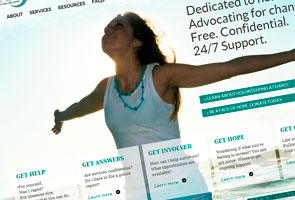
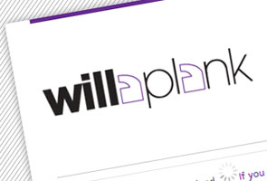
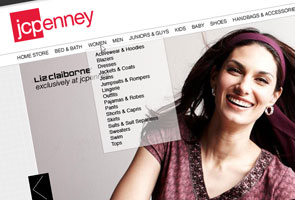
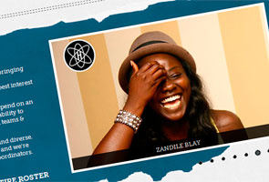
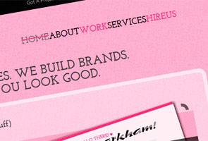
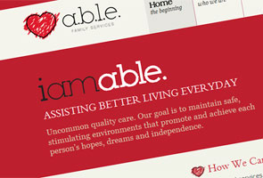
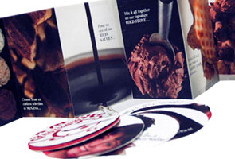
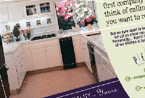

my work
- all
- web design
- print design
- identity design
- front-end dev
- wordpress
- email marketing
- personal projects
-

Dallas Area Rape Crisis Center Website (Work in Progress)
-

Willa Plank Website (Work in Progress)
-

Personal Project: JCPenney Redesign
-

November Group Website
-

Pink Sneaks Creative Website
-

A.B.L.E. Family Services Website
-

Personal Project: Cold Stone Creamery
-
National Fair Housing Alliance :: Awareness Poster
-
Shear Designers :: Directory Advertisement
-

Persona Kitchen & Bath Solutions :: Directory Advertisement
-
Diversified Financial Services :: Brochure & Identity System
-
The Summit :: Directory Advertisements
{kind=link}
{kind=link}
{kind=link}
{kind=link}
{kind=link}
{kind=link}
{kind=link}
{kind=link}
{kind=link}
{kind=link}
{kind=link}
{kind=link}
{kind=link}
{kind=link}
{kind=link}
my story
I’m a geek in pink(love me some Jason Mraz) with over four years of experience designing for the web. I am well-versed in design trends and usability with a strong handle on CSS and HTML. The result is beautiful, well-planned websites that are user-friendly and engaging.
Like most creatives, I’m likely to buy something that’s in a pretty box, even if I don’t need it. Likewise, I’ll refused to work with a business with a poorly-designed website, or (gasp) no website at all.
In my spare time, I’m a volunteer advocate at the Dallas Area Rape Crisis Center and an avid baker. In addition, I have an unhealthy obsession with Italian food, Apple products, cupcakes, musical theatre and Glee.

P.S. I really want a Dribbble invite (hint, hint, nudge, nudge). Thanks Joel!
why me?
Download: Resume | Portfolio (soon!)
I’m looking for a great agency to welcome me as part of their team. I think you should hire me. Here’s why:
1) I’m Curious ✚
I love to learn; I take responsibility for my own continuing education. Why and how are my favorite questions. I want to continuously get better. I want to keep the pressure up. I want to take on the toughest challenges.
2) I’m Resourceful ✚
I learn fast and need little supervision. I invest a lot of my free time into furthering my knowledge and skill set, which in the ever-changing world of the web, is really a no-brainer. Right now my training methods of choice are Treehouse and the Tuts+ network, in addition to the occasional conference.
3) I’m Obsessive ✚
I have a tendency to forget to eat, sleep and various other important things we humans should do when I’m working. I’m also somewhat of a pixel perfectionist, so it’s fairly common for me to get pretty single-minded while designing. My goal is to make every new project my best work to date. Within reason of course, I know deadlines are important.
4) I’m a communicator ✚
Rather than just making things "pretty", I make them effective. Studying at one of the best communications schools in the country, I learned how to utilize all faucets of media to convey a strong and clear message to an audience.
5) I’ve got the know-how ✚
I dabble in many things, but I’m most adept at web design and front-end development. In addition, I’m currently teaching myself PHP, jQuery and Wordpress theme development (see points #1 and #2).
6) I’m flexible ✚
I’m not afraid of change. In fact, I thrive on it. Technologies are constantly evolving, and I’m more that ready to evolve with them (again, refer to point #1). Consequently, I’m a bit of a nomad, but I’m currently based in Dallas, Texas.
7) I’m a People Person ✚
Besides playing nicely with others as a part of a team, I design with people in mind. This means creating technologies that address real needs, issues, and opportunities for people. In order to be truly useful, design should start with an understanding of people, not with the technology. The technology should adapt to people, not the other way around.
8) I’m a self-starter ✚
Through my freelancing persona, I frequently take projects from conception to completion. And more often than not, I have next to nothing from which to work. Recently, I donated my talent to the Dallas Area Rape Crisis Center, which turned out to be a mutually beneficial partnership. I understand that sometimes you have to create your own opportunities.
9) I’m thorough ✚
To me, being a designer is like being an actor. I research each role I take on. One day I’m immersed in stories of victimization and survival, the next, scouting talent for a college event. Content, and context, are king, and a solid understanding of my client and their industry is the first step in creating an effective design.
10) I’m a little crazy ✚
Wait, don’t leave. Hear me out. Not scary crazy. Okay, sometimes I talk to my computer, but I swear it doesn’t talk back. I thrive on the energy, I love design and I’m passionate about what I do.
♥ Hire me and you won’t regret it! ♥